Malty design system
Architecting a design system
Beyond a UI kit
At Carlsberg, the digital landscape was fragmented: inconsistent UI slowed every launch and diluted the brand. Rather than build a UI kit, we built a living ecosystem of shared language, components, and code.
The mission: an open-source design system that supports dozens of projects while guaranteeing accessibility and developer parity, not just a folder of screens.
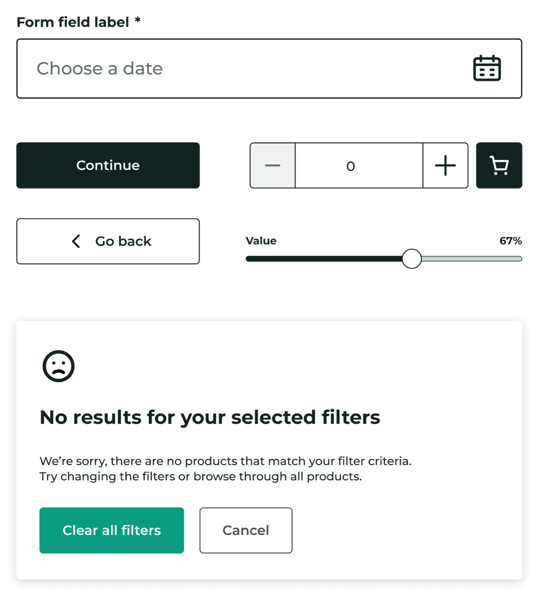
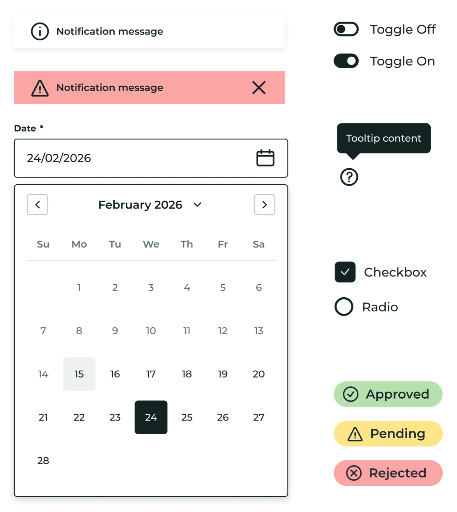
Design principles
We established nine core pillars as organizational guidance. Principles are the structural integrity of a design system: they keep decisions consistent long after the first release.
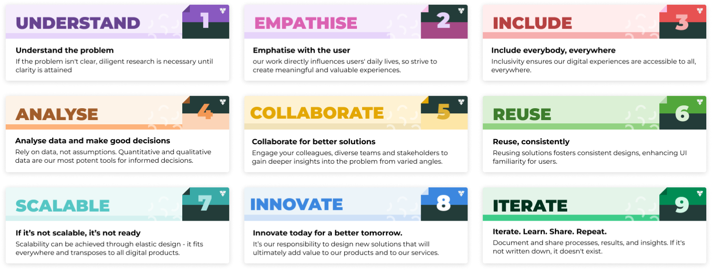
The foundation
We moved from arbitrary names like "Yellow-500" to semantic tokens. Change a brand's primary from green to blue, and one token updates the whole ecosystem. Transparent state layers handle interaction, so consistency holds without hundreds of hard-coded colors.
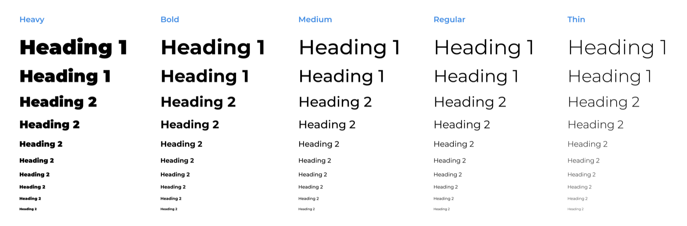
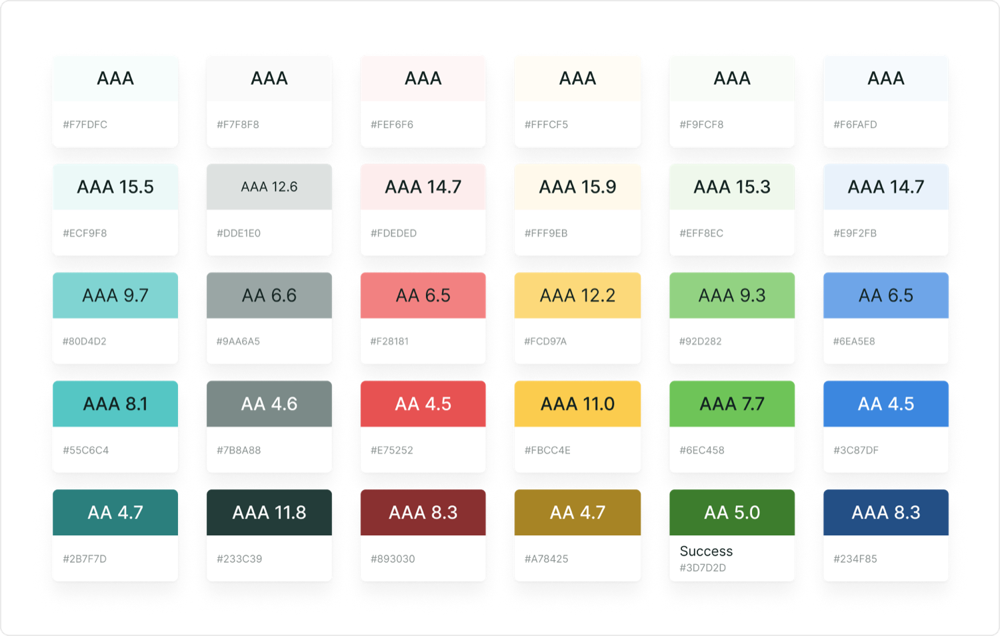
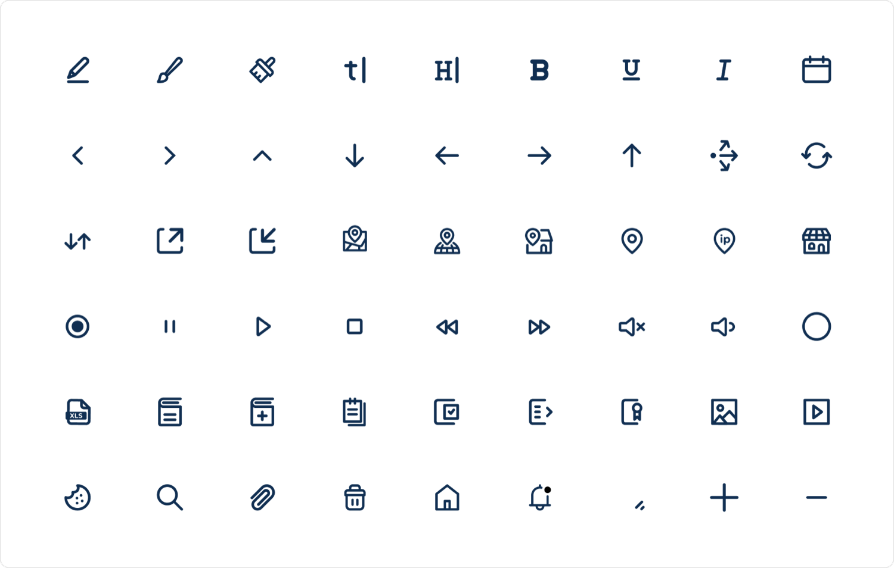
The systems architect
It fixes the common failures of popular design systems with a foundation that stays intuitive for designers and seamless for engineers. Every property reads from one place: element, tone, emphasis, and state.
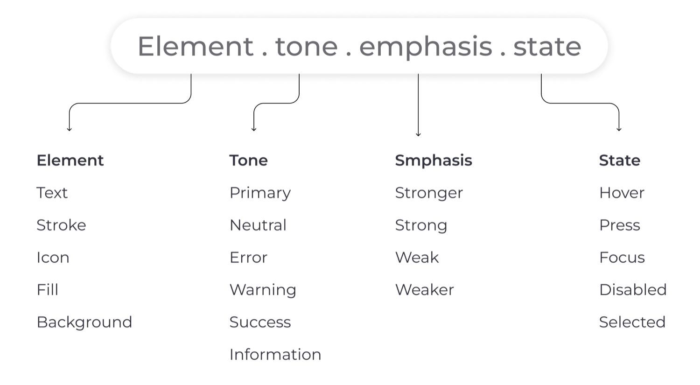
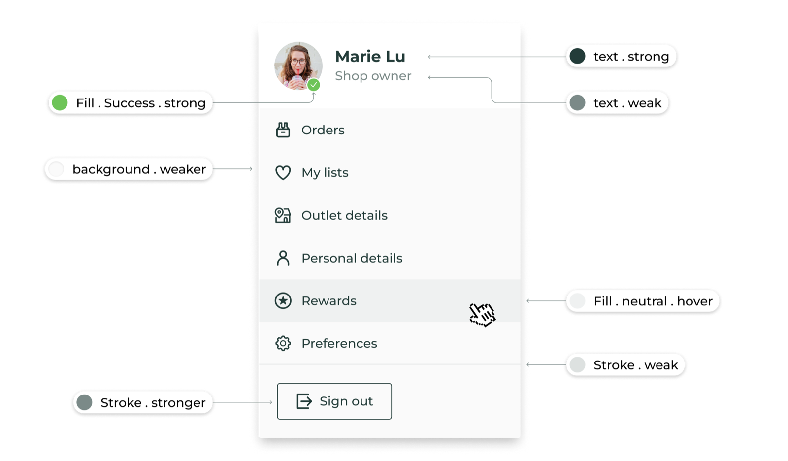
Light and dark mode: consistency in contrast
The same component renders correctly in both themes from one source of truth. For dark mode we built a surface-elevation system: the higher an element sits, the lighter its background becomes, so depth reads without a single extra hard-coded color.
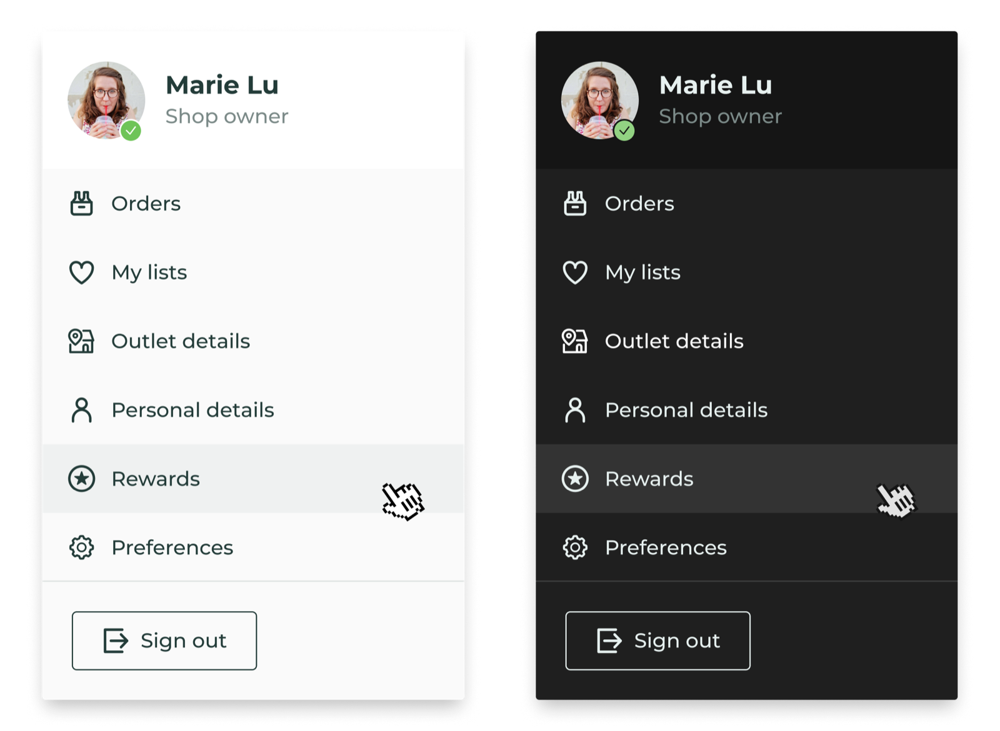
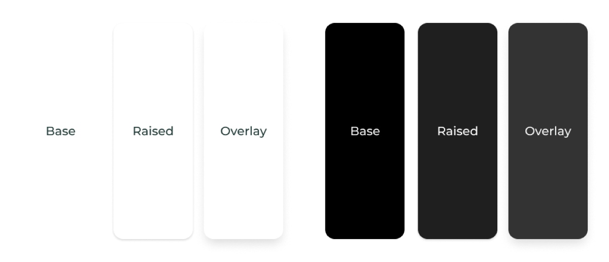
Overlays over duplication
We built a scalable interaction-state system to speed up both prototyping and engineering handoff. Standard transparent overlays handle hover and press, which removed hundreds of redundant "hover-specific" color tokens.
Feedback stays uniform across the whole suite, consistent for users and lean for the asset library. And because only the base reacts to color, the interactions never change.
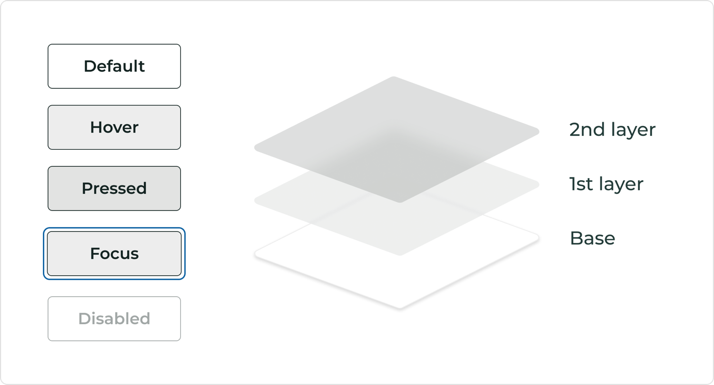
Intuitive component architecture
A design system is only successful if designers actually use it. We built using a strict Atomic Design methodology, starting from Atoms (icons, tokens) to Molecules (pills, forms) to Organisms (product cards).
We utilized Auto-layout, Component Properties, and Variants to make components "smart." Instead of searching through a layer list, designers use simple toggle switches to change states, add icons, or swap layouts.
We also used flexible "Slot" components, allowing designers to inject custom content into complex organisms (like Modals or Accordions) without detaching the main instance.
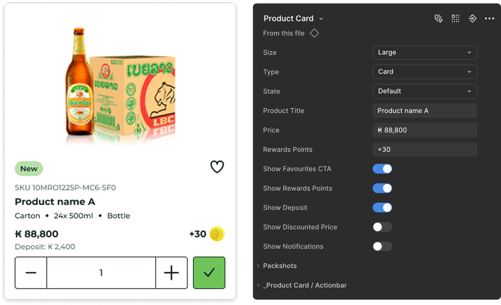
Spacing and interaction
A 4-point grid removed arbitrary spacing choices: every value is a multiple of four. The result is a reliable visual rhythm that scales seamlessly across the global product suite.
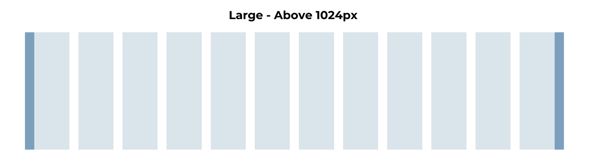
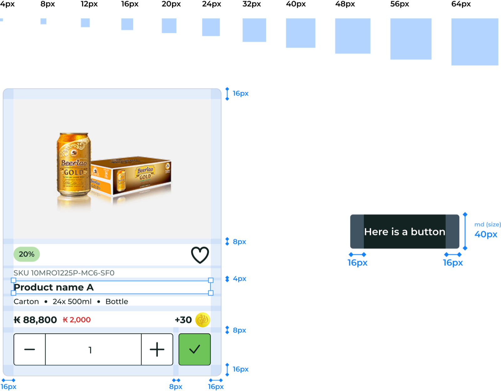
Interaction and motion
Motion is a token too. Transitions, feedback, emphasis, and expression are defined once and reused, so the system feels alive and predictable rather than decorated case by case.
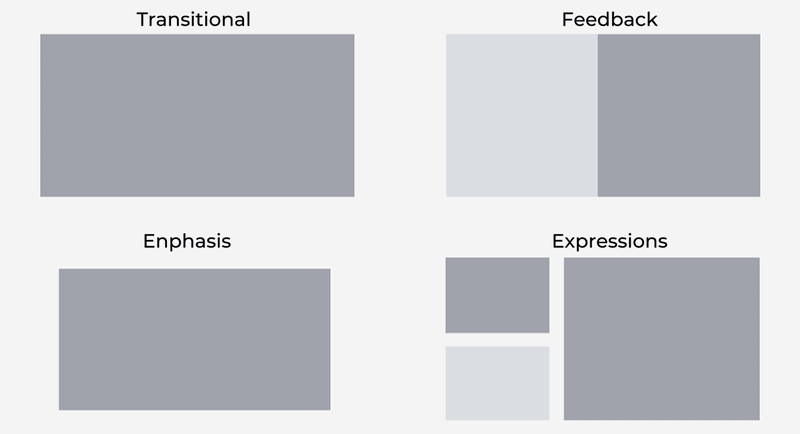
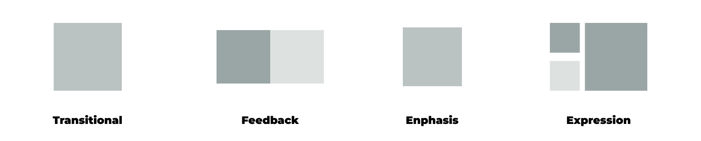
Scalability at speed
Malty reached 100% unified UI across all B2B and B2C touchpoints, and open-sourcing it established Carlsberg as a leader in the design community.
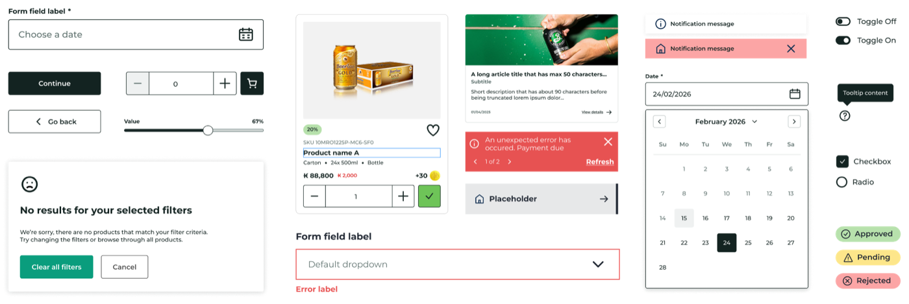